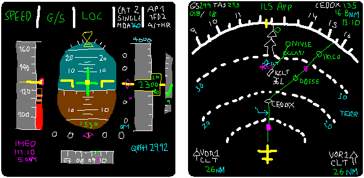
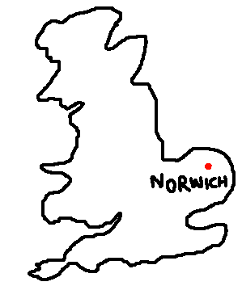
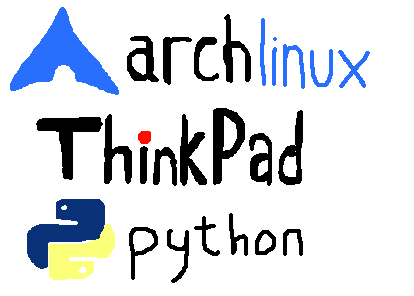
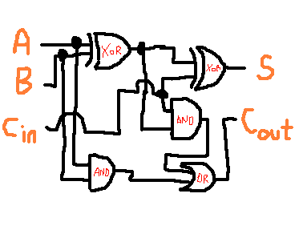
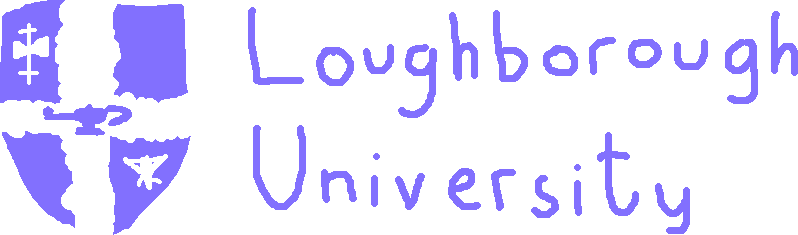

I am 21 and from Spain. Even though I was born in Barcelona, I have lived in Mallorca for most of my life.
Some close people to me were commercial pilots, and as such I've always liked aviation. At around 16 or so I really started liking the computer-science-ey side of planes; avionics and by extension embedded systems.
When I was 15 I moved to the UK for college. It was really cool to leave my home country and discover a new part of the world.
In college I got into Arch Linux, ThinkPads (and how cool toying with computers is) and Python, which I used on my Computer Science Project; making a 2D Air traffic Control game (it was a bit of a trash project, but a really cool experience).
For my last year of college I also did an Extended Project Qualification. I did mine on the construction of an 8bit CPU, based on the book Digital Computer Electronics by A. Malvino - this further consolidated my admiration for hardware/systems projects within the Computer Science field.
Once I finished college I got into Loughborough University, studying Computer Science and Business Management (BSc) - I am about to finish (Summer 2020). During my time there I was part of two societies, one of them being a student to student listening service which really opened my eyes to the importance of mental health.
The other society was LUMotorsport, a university team competing internationally against other universities to build and race a single seat race car. My dissertation was based around the creation of a series of low-cost data-centered projects for the team's journey from a combustion car to an electric one.

That's about it for now. When I do more cool stuff I'll make sure to write it here!
Psst, psst - here is my CV just in case. You can reach me at c.lagoa.p@gmail.com (soon will self-host email dw)